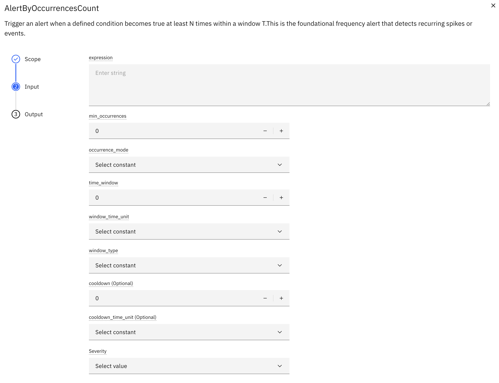
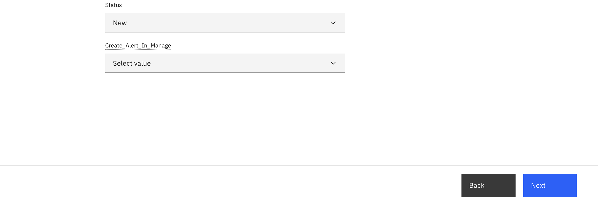

AlertsByOccurrencesCount
Objective
In this exercise, you will configure an AlertByOccurrencesCount to detect when a condition becomes true N times within a time window T. This frequency-based alert converts intermittent noise into meaningful pattern alerts.
What is an AlertByOccurrencesCount?
An AlertByOccurrencesCount triggers when a defined condition becomes true at least N times within a sliding or tumbling window T. This is the foundational frequency alert that detects recurring spikes or events.
Goals
- Convert Noise to Patterns: Transform intermittent events into meaningful alerts
- Reduce False Positives: Filter out one-off anomalies
- Detect Recurring Issues: Identify persistent problems requiring attention
Execution Modes Supported
- Sliding window
- Tumbling window
Occurrence Mode
- RISING EDGE
- EVERY TYPE EVALUATION
Occurrence Detection:
An occurrence represents a discrete event where the configured condition becomes true.
Configuration Parameters
| Parameter | Type | Required | Default | Description |
|---|---|---|---|---|
| condition | string | Yes | - | Boolean expression (e.g., df['temp'] > 80) |
| min_occurrence(N) | int | Yes | - | Minimum number of breaches required |
| occurrence_mode | string | Yes | - | RISING_EDGE or EVERY_TYPE_EVALUATION |
| time_window(T) | int | Yes | - | Time window in minutes/hours/days |
| window_type | string | Yes | - | SLIDING or TUMBLING |
| cooldown | int | No | - | Minimum time between consecutive alerts |
| cooldown_unit | String | No | Minute | Cooldown Unit in minutes/hours/days |
UI Configuration


Configuration Steps
Step 1: Configure AlertsByOccurrencesCount
- Navigate to device type from left menu
- Select your device type and click Edit
- Navigate to the Calculated Metrics tab
- Click Create Calculated Metric
- Select AlertByOccurrencesCount from the KPI catalog
Step 2: Configure Alert Parameters
Expression:
# Temperature threshold
df['temp'] > 80
# Multiple conditions
(df['temp'] > 80) & (df['humidity'] > 70)
Occurrence Mode:
- RISING_EDGE: Record an occurrence only when the condition transitions from
false → true. - EVERY_EVALUATION: Record every occurrences.
Threshold(min_occurrences) (N):
Example: 5 occurrences
- Higher N = fewer false positives, slower detection
- Lower N = faster detection, more sensitive
Time Window (T):
Example: 10 minutes
- Duration for counting occurrences within the evaluation window
Window Type:
- Sliding Window: Continuous evaluation More responsive Better for real-time monitoring
- Tumbling Window: Fixed intervals Better for reporting Clearer time boundaries
Cooldown Period:
Example: 15 minutes
- Prevents alert fatigue
- Allows time for corrective action
Alert Actions:
- select alert severity (Critical, High, Medium, Low)
- select alert creation status(New, Resolved, Acknowledge, validated)
- select create alert in manage(True, False)
Example Timeline
Occurrences Mode:
1. RISING_EDGE:
Record an occurrence only when the condition transitions from false → true.
Behavior:
- If condition stays true across multiple data points, do not count additional occurrences
- A new occurrence is recorded only after condition becomes false and then true again
Example:
| Time | Condition | Occurrence | Notes |
|---|---|---|---|
| t1 | false | ||
| t2 | true | ✅ | First transition: false → true |
| t3 | true | Still true, no new occurrence | |
| t4 | false | ||
| t5 | true | ✅ | Second transition: false → true |
2. EVERY_TYPE_EVALUATION:
At each event in the batch, if the condition is true, count as an occurrence.
Example:
| Time | Condition | Occurrence | Notes |
|---|---|---|---|
| t1 | false | ||
| t2 | true | ✅ | Condition is true |
| t3 | true | ✅ | Condition is true |
| t4 | false | ||
| t5 | true | ✅ | Condition is true |
Execution Modes
Sliding Window: - Continuously evaluates occurrences within a moving time window - Window moves with each batch run - More responsive to recent events
Example:
Configuration:
- Condition: temp > 80
- N = 3 occurrences
- T = 10 minutes (window size)
- Mode: EVERY_TYPE_EVALUATION
Example Timeline:
| Time | temp | Condition | Occurrence | Window (10 min) | Count | Alert |
|---|---|---|---|---|---|---|
| 12:00 | 75 | false | 0 | |||
| 12:02 | 85 | true | ✅ #1 | 11:52-12:02 | 1 | |
| 12:04 | 78 | false | 11:54-12:04 | 1 | ||
| 12:06 | 88 | true | ✅ #2 | 11:56-12:06 | 2 | |
| 12:08 | 72 | false | 11:58-12:08 | 2 | ||
| 12:10 | 90 | true | ✅ #3 | 12:00-12:10 | 3 | 🚨 Alert (Count resets to 0) |
| 12:12 | 79 | false | 12:02-12:12 | 0 | ||
| 12:14 | 86 | true | ✅ #1 | 12:04-12:14 | 1 | |
| 12:16 | 77 | false | 12:06-12:16 | 1 | ||
| 12:18 | 89 | true | ✅ #2 | 12:08-12:18 | 2 | |
| 12:20 | 91 | true | ✅ #3 | 12:10-12:20 | 3 | 🚨 Alert (Count resets to 0) |
Key Characteristics: - Window continuously slides forward - At 12:10: Window is 12:00-12:10, contains 3 occurrences → Alert fires, count resets to 0 - At 12:12: Window is 12:02-12:12, count is 0 (reset after alert) - At 12:14: New occurrence #1 detected, count = 1 - At 12:20: Window is 12:10-12:20, contains 3 new occurrences → Alert fires, count resets to 0 - After each alert, occurrence count clears and starts from 0 - More responsive to recent patterns
Tumbling Window: - Fixed, non-overlapping time windows - Better for reporting-like use cases - Resets at window boundaries
Example:
Configuration:
- Condition: temp > 80
- N = 3 occurrences
- T = 10 minutes (window size)
- Mode: RISING_EDGE
Example Timeline:
Window 1: 12:00-12:10
| Time | temp | Condition | Occurrence | Count in Window |
|---|---|---|---|---|
| 12:00 | 75 | false | 0 | |
| 12:02 | 85 | true | ✅ #1 | 1 |
| 12:04 | 78 | false | 1 | |
| 12:06 | 88 | true | ✅ #2 | 2 |
| 12:08 | 72 | false | 2 | |
| 12:10 | 90 | true | ✅ #3 | 3 |
Result: Window closes at 12:10 with 3 occurrences → 🚨 Alert Fired
Window 2: 12:10-12:20 (New window starts, count resets)
| Time | temp | Condition | Occurrence | Count in Window |
|---|---|---|---|---|
| 12:12 | 79 | false | 0 | |
| 12:14 | 86 | true | ✅ #1 | 1 |
| 12:16 | 77 | false | 1 | |
| 12:18 | 89 | true | ✅ #2 | 2 |
| 12:20 | 84 | true | 2 |
Note
The temperature exceeded 80 at 12:20, this occurrence was not counted because the window type is rising edge. Only transitions where the condition changes from false → true are considered valid events
Result: Window closes at 12:20 with 2 occurrences → ❌ No Alert (< 3)
Window 3: 12:20-12:30 (New window starts, count resets)
| Time | temp | Condition | Occurrence | Count in Window |
|---|---|---|---|---|
| 12:22 | 87 | true | ✅ #1 | 1 |
| 12:24 | 78 | false | 1 | |
| 12:26 | 91 | true | ✅ #2 | 2 |
| 12:28 | 75 | false | 2 | |
| 12:30 | 88 | true | ✅ #3 | 3 |
Result: Window closes at 12:30 with 3 occurrences → 🚨 Alert Fired
Key Characteristics: - Fixed, non-overlapping windows - Count resets at window boundaries - Occurrences from previous windows don't carry over - Better for periodic reporting - Clearer time boundaries - Less frequent alerts compared to sliding window
Comparison: Sliding vs Tumbling
| Aspect | Sliding Window | Tumbling Window |
|---|---|---|
| Window Movement | Continuous, moves with each evaluation | Fixed intervals, resets at boundaries |
| Occurrence Carryover | Yes, occurrences can span multiple evaluations | No, count resets each window |
| Responsiveness | High, detects patterns quickly | Lower, waits for window to close |
| Alert Frequency | Can be higher | Typically lower |
| Use Case | Real-time monitoring, immediate detection | Periodic reporting, scheduled analysis |
When to Use Each Mode
Use Sliding Window When: - You need immediate detection of recurring issues - Real-time monitoring is critical - Pattern detection should be continuous - Example: Detecting repeated API failures, monitoring critical sensors
Use Tumbling Window When: - You need periodic summaries or reports - Clear time boundaries are important - You want to avoid alert overlap - Example: Hourly quality checks, daily performance reports, shift-based monitoring
Backtrack Support
AlertsByOccurrencesCount supports backtracking to handle historical data scenarios, including data corrections and retroactive alert resolution.
Use Case 1: Resolving Alerts After Data Correction
Scenario: 1. Sensor sends incorrect high values, triggering an alert 2. AlertsByOccurrencesCount fires (Status: New) 3. Corrected data is uploaded via CSV file upload 4. Pipeline runs in backtrack mode 5. Alert status automatically updates from New to Resolved
How It Works
When you upload corrected historical data:
- Upload Corrected Data: Use CSV file upload to replace incorrect values
- Run Pipeline in Backtrack: Execute the pipeline in backtrack mode for the affected time range
- Re-evaluation: The system re-evaluates the condition with corrected data
- Alert Status Update: If occurrences no longer meet threshold N, alert status changes to Resolved
Example: Data Value Correction
Configuration:
- Condition: temp > 80
- N = 3 occurrences
- T = 10 minutes
- Mode: RISING_EDGE
Original Data (Incorrect):
| Time | Original temp | Condition | Occurrence | Count |
|---|---|---|---|---|
| 12:00 | 75 | false | 0 | |
| 12:02 | 95 | true | ✅ #1 | 1 |
| 12:04 | 92 | true | 1 | |
| 12:06 | 88 | true | 1 | |
| 12:08 | 78 | false | 1 | |
| 12:10 | 91 | true | ✅ #2 | 2 |
| 12:12 | 77 | false | 2 | |
| 12:14 | 89 | true | ✅ #3 | 3 |
Result: Alert fires at 12:14 (Status: New)
Corrected Data (After CSV Upload):
| Time | Corrected temp | Condition | Occurrence | Count |
|---|---|---|---|---|
| 12:00 | 75 | false | 0 | |
| 12:02 | 85 | true | ✅ #1 | 1 |
| 12:04 | 76 | false | 1 | |
| 12:06 | 79 | false | 1 | |
| 12:08 | 78 | false | 1 | |
| 12:10 | 77 | false | 1 | |
| 12:12 | 77 | false | 1 | |
| 12:14 | 79 | false | 1 |
Result: After backtrack, count = 1 (< N=3), Alert status changes to Resolved
Use Case 2: Creating Alerts After Adding Missing Events
Scenario: 1. Some sensor readings were not captured initially 2. No alert was triggered 3. Missing events are added via CSV file upload 4. Pipeline runs in backtrack mode 5. New alert is created (Status: New)
Example: Adding Missing Events
Original Data (Incomplete):
| Time | temp | Condition | Occurrence | Count |
|---|---|---|---|---|
| 12:00 | 75 | false | 0 | |
| 12:10 | 77 | false | 0 | |
| 12:20 | 79 | false | 0 |
Result: No alert (insufficient data points)
After Adding Missing Events:
| Time | temp | Condition | Occurrence | Count |
|---|---|---|---|---|
| 12:00 | 75 | false | 0 | |
| 12:02 | 85 | true | ✅ #1 | 1 |
| 12:04 | 78 | false | 1 | |
| 12:06 | 88 | true | ✅ #2 | 2 |
| 12:08 | 77 | false | 2 | |
| 12:10 | 90 | true | ✅ #3 | 3 |
| 12:12 | 77 | false | 3 | |
| 12:14 | 79 | false | 3 | |
| 12:16 | 78 | false | 3 | |
| 12:18 | 79 | false | 3 | |
| 12:20 | 79 | false | 3 |
Result: After backtrack, count = 3 (≥ N), New alert created at 12:10
Benefits
- Data Integrity: Alerts reflect accurate data after corrections
- Retroactive Analysis: Historical patterns are correctly identified
- Automatic Management: No manual alert closure needed
Summary
You have learned:
✅ occurrence-based alert concepts
✅ Configure condition expressions and occurrence modes
✅ Set appropriate N, T, and cooldown parameters
✅ Handle sliding window evaluations
✅ Handle Tumbling window evaluations
✅ Understand post-alert reset events counts
✅ Support backtrack scenarios
Next Steps
Proceed to Exercise 3: Create Alert in Manage.
Congratulations! You have successfully configured AlertsByOccurrencesCount for frequency-based monitoring.